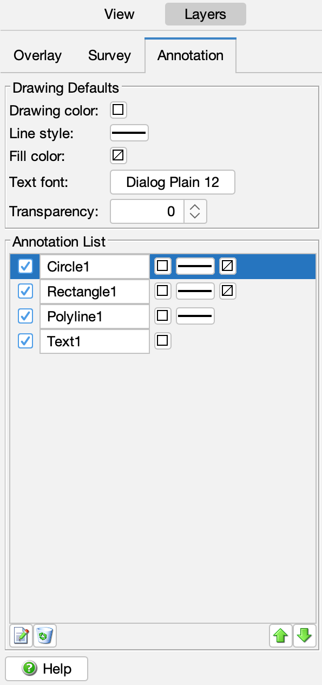

CoastWatch Data Analysis Tool Help: Shape and Text Annotations
In this section:
What are annotations?
Annotations are text, lines, polygons, and
other shapes on the data view. You can choose the default color,
line style, fill, and text font, and manipulate the annotations
as layers, similar to data overlays and surveys.
Annotation tools
The following figure shows the annotation controls, with the annotation
tool buttons and current list of annotation layers:

You can add shapes and text using the CDAT toolbar buttons as follows:
- Line
- Draws a line in the current color and style.
- Polyline
- Draws a series of connected line segments in the current color
and style.
- Curve
- Uses a set of polyline control points to draw a Bezier curve in
the current color and style.
- Rectangle
- Draws a rectangular box in the current color and style, and
fills with the fill color.
- Polygon
- Draws an irregular polygon in the current color and style, and
fills with the fill color.
- Circle
- Draws a circle from the center to radius point in the current
color and style, and fills with the fill color.
- Text
- Places the specified text in the current font and color. The
text font size remains constant if the data view zoom factor is modified.
The text anchor point moves with the view.
Annotation list
Once added to the annotation layer list, annotations are similar to
surveys and overlays, in that they can be modified, renamed, set
visible or invisible, moved up or down in the list, and removed — see
the overlays section for
details.
← Back to overview